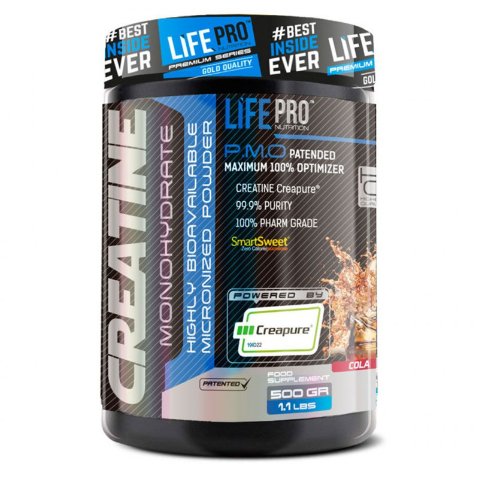

Life Pro Creatine Creapure® 500g
Life Pro Creatine es un suplemento alimenticio a base de creatina monohidrato bajo el sello Creapure, destinado a incrementar la fuerza, optimizar el desarrollo muscular y reducir la fatiga de cualquier deporte. Ahora disfruta de sus deliciosos sabores: Lollipop, Cola y Naranja.